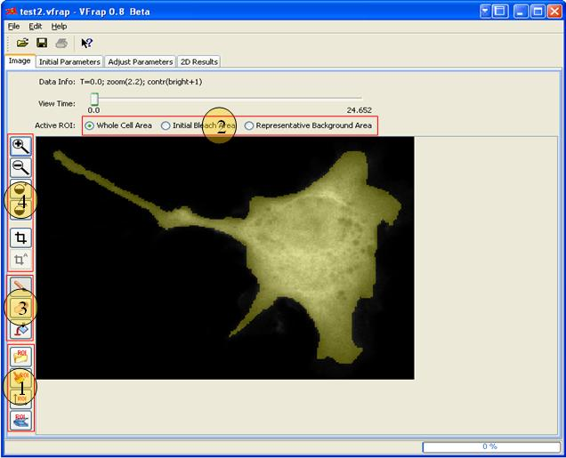

-
Loading FRAP experiment data and defining regions of interest (ROI).
-
Estimating diffusion rate by fitting recovery curve based on time course data under bleached area.
-
Generating 2D spatial bioModel (please refer to Virtual Cell documentation at http://vcell.org/userdocs/Rel/user_guide.pdf for definition of bioModel) based on ROIs and diffusion rate.
-
Running spatial simulation based on the created bioModel.
-
Running analysis to show how different diffusion rates working in different ROIs.
3.1 Manipulating FRAP Experimental Data
Figure 3-1 illustrates the Virtual Frap user interface for loading and processing FRAP images. Virtual Frap image tool consists of several toolboxes to manipulating images. These are:- Advanced ROI Toolbox - To allow importing region of interest, clearing ROI and plotting ROI time course.
- ROI Toolbox - To identify the specific ROI that is being defined.
- Drawing Toolbox - To enable painting, erasing and filling on the image.
- Adjustment Toolbox - To allow zooming in/out, increasing/reducing image contrast and cropping image by customized or default rectangular window.

Figure 3-1: Virtual Frap Image Tool